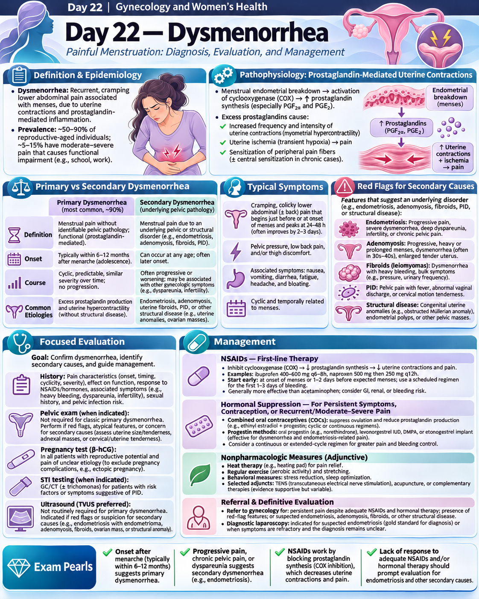
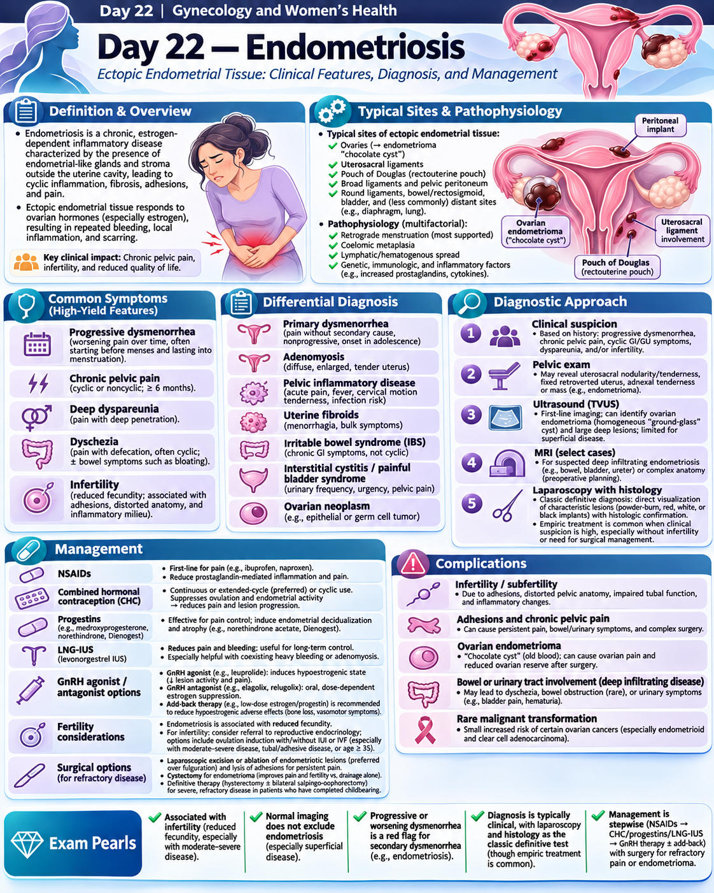
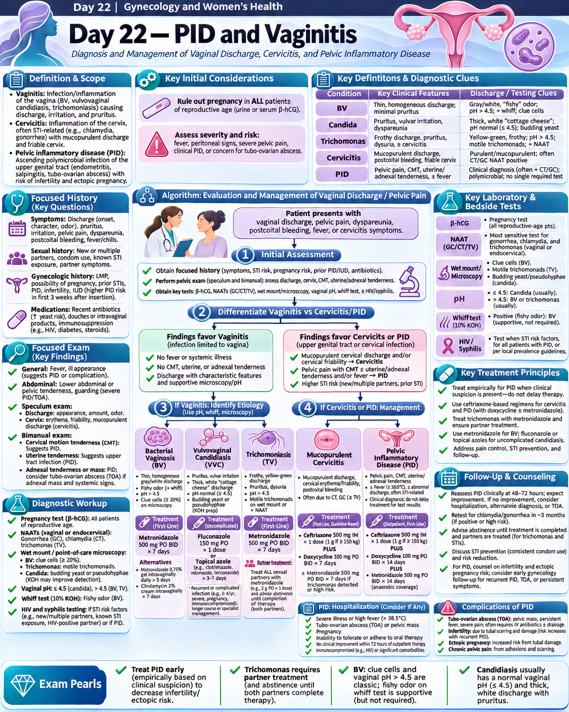
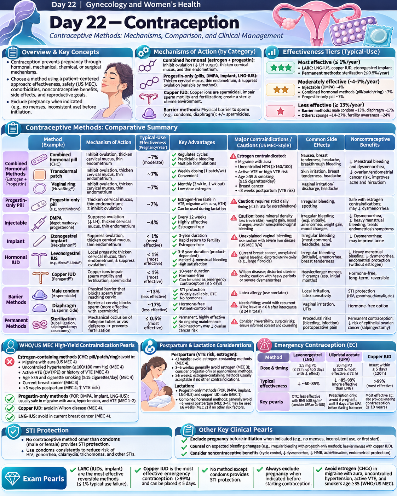
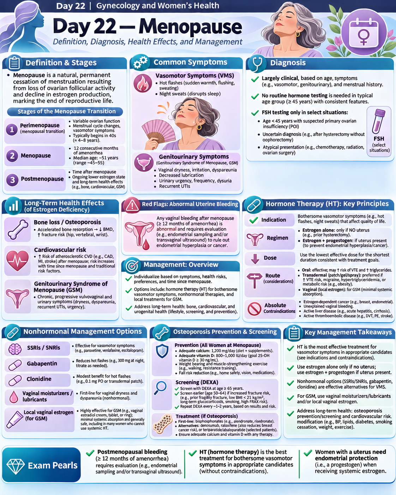
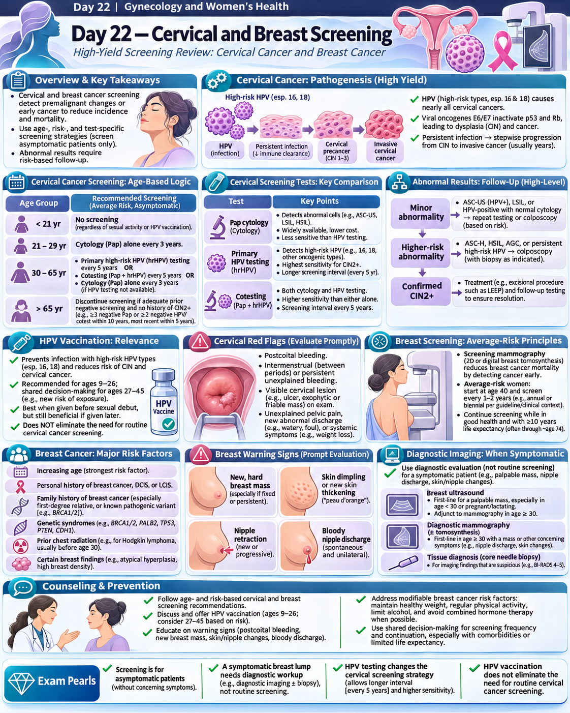
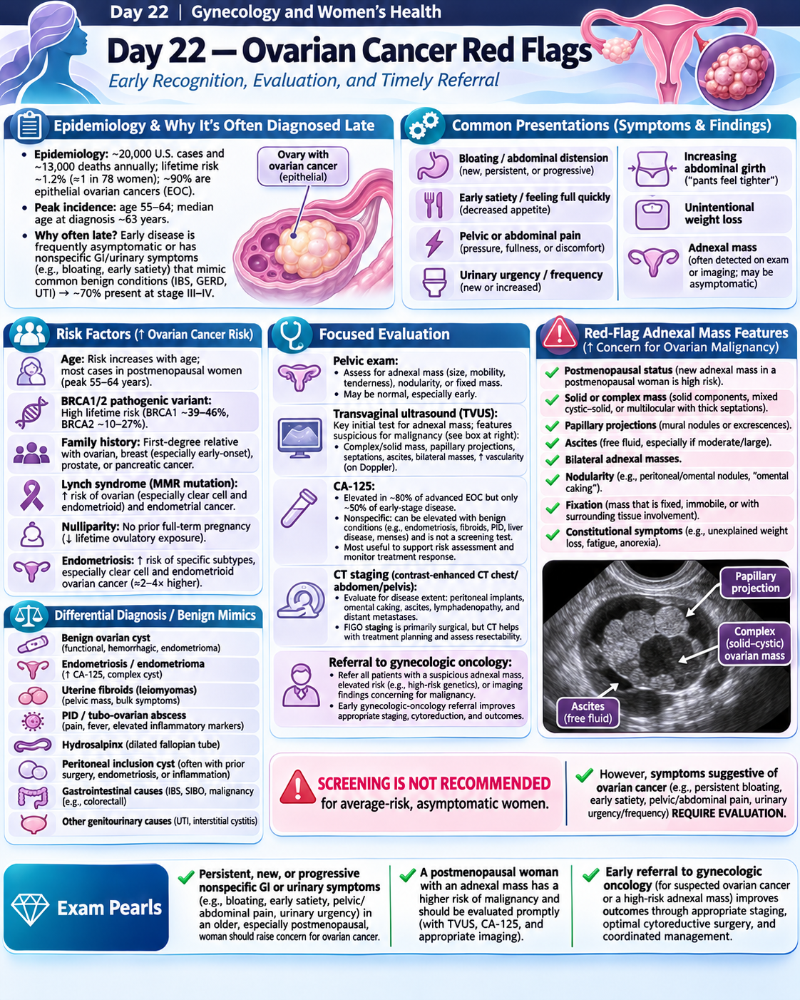

Day 22 — Gynecology & Women’s Health
Physician-level DOH exam review covering abnormal uterine bleeding, dysmenorrhea, PCOS, endometriosis, PID/vaginitis, contraception, menopause, infertility, cervical and breast screening, and ovarian cancer red flags. Each topic includes deep study notes, the new Day 22 visual, original clinical questions, rapid review, and guideline references.
Abnormal uterine bleeding
AUB requires pregnancy exclusion, hemodynamic assessment, PALM–COEIN classification, cancer-risk assessment, and management matched to severity and reproductive goals.
Immediate priorities
- First: pregnancy test in reproductive-age patients and assess hemodynamic stability.
- Unstable/severe bleeding: ABCs, 2 large-bore IVs, CBC/coagulation/type & cross, fluids/blood as needed, urgent gynecology involvement.
- Consider uterine tamponade or procedural/surgical control if bleeding is refractory.
PALM–COEIN & workup
- PALM: Polyp, Adenomyosis, Leiomyoma, Malignancy/hyperplasia. COEIN: Coagulopathy, Ovulatory dysfunction, Endometrial, Iatrogenic, Not otherwise classified.
- CBC; TSH when indicated; STI testing if risk; coagulation workup if history suggests bleeding disorder; TVUS for structural disease.
- Endometrial sampling: age ≥45, or younger with unopposed-estrogen risk, persistent AUB, or failed medical therapy.
Treatment strategy
- Stable acute heavy bleeding: high-dose combined OCPs or progestin, tranexamic acid, NSAIDs when appropriate.
- Chronic heavy bleeding: LNG-IUS is among the most effective medical options; alternatives include combined hormonal therapy, cyclic/continuous progestins, TXA, NSAIDs.
- Structural lesions may need hysteroscopy, polypectomy, myomectomy, UAE, or definitive surgery depending on diagnosis and fertility goals.
🖼️ Study visual — Abnormal uterine bleeding
Open the full infographic/algorithm after reviewing the written notes.
Rapid review
High-yield exam recall.
Guidelines & academic sources
For local licensing questions, prioritize current Department of Health Abu Dhabi standards when a local standard exists.
My additions / weak points
Dysmenorrhea
Separate primary prostaglandin-mediated dysmenorrhea from secondary pelvic pathology such as endometriosis, adenomyosis, fibroids, or PID.
Primary vs secondary
- Primary: begins within 6–12 months after menarche once ovulatory cycles establish; cyclic cramping, usually no pelvic pathology.
- Secondary: later onset, progressive/worsening pain, dyspareunia, infertility, abnormal bleeding, fever/discharge, or poor response to standard therapy.
Evaluation
- History: timing, cyclicity, severity, functional impairment, bleeding pattern, sexual/STI history, contraception, fertility plans.
- Pelvic exam and TVUS when atypical, refractory, or secondary cause suspected; pregnancy test if reproductive potential and diagnosis unclear.
Management
- NSAIDs first-line: start at onset or 1–2 days before expected menses and schedule through first 2–3 days.
- Hormonal suppression: combined hormonal contraception or progestin methods; continuous/extended regimens may improve control.
- Persistent pain despite adequate therapy or red flags → gynecology evaluation for endometriosis/other pathology.
🖼️ Study visual — Dysmenorrhea
Open the full infographic/algorithm after reviewing the written notes.
Rapid review
High-yield exam recall.
Guidelines & academic sources
For local licensing questions, prioritize current Department of Health Abu Dhabi standards when a local standard exists.
My additions / weak points
PCOS
PCOS is a diagnosis of exclusion characterized by ovulatory dysfunction and/or hyperandrogenism with important metabolic and endometrial consequences.
Diagnosis
- Rotterdam: 2 of 3 — oligo/anovulation, clinical/biochemical hyperandrogenism, polycystic ovarian morphology — after excluding mimics.
- Exclude pregnancy, thyroid disease, hyperprolactinemia, nonclassic CAH; consider Cushing syndrome or androgen-secreting tumor if severe/rapid virilization.
Workup & complications
- TSH, prolactin, total/free testosterone; 17-OHP when indicated; glucose/A1c or OGTT; lipids; BP/BMI.
- Risks: infertility, endometrial hyperplasia/cancer from chronic anovulation, metabolic syndrome, type 2 diabetes, OSA, NAFLD.
Management by goal
- Lifestyle and weight reduction improve ovulation/metabolic health.
- Combined OCPs regulate cycles and reduce hyperandrogenism; metformin helps metabolic dysfunction.
- Letrozole is first-line ovulation induction for infertility in many guidelines; spironolactone can help hirsutism but requires reliable contraception.
🖼️ Study visual — PCOS
Open the full infographic/algorithm after reviewing the written notes.
Rapid review
High-yield exam recall.
Guidelines & academic sources
For local licensing questions, prioritize current Department of Health Abu Dhabi standards when a local standard exists.
My additions / weak points
Endometriosis
Endometriosis is estrogen-dependent inflammatory disease with ectopic endometrial-like tissue causing dysmenorrhea, dyspareunia, chronic pelvic pain, and infertility.
Recognition
- Progressive dysmenorrhea, deep dyspareunia, chronic pelvic pain, cyclic dyschezia/urinary symptoms, infertility.
- Exam may show uterosacral nodularity/tenderness, fixed retroverted uterus, or adnexal mass.
Diagnosis
- TVUS is first-line for ovarian endometrioma; MRI helps map deep infiltrating disease.
- Normal imaging does not exclude superficial disease.
- Laparoscopy with histology remains classic definitive diagnosis, but empiric treatment based on clinical suspicion is common.
Management
- NSAIDs for pain; combined hormonal contraception or progestins/LNG-IUS for suppression.
- GnRH agonist/antagonist therapy is an option for refractory symptoms, generally with attention to hypoestrogenic effects/add-back therapy.
- Surgery for refractory pain, endometrioma, anatomic distortion, or selected fertility indications.
🖼️ Study visual — Endometriosis
Open the full infographic/algorithm after reviewing the written notes.
Rapid review
High-yield exam recall.
Guidelines & academic sources
For local licensing questions, prioritize current Department of Health Abu Dhabi standards when a local standard exists.
My additions / weak points
PID and vaginitis
Distinguish lower-vaginal infection from cervicitis/PID; PID treatment should not be delayed when minimum clinical criteria and STI risk make the diagnosis plausible.
Discharge differential
- BV: thin homogeneous gray/white, pH >4.5, clue cells, fishy odor.
- Candida: intense pruritus, thick white discharge, usually pH ≤4.5, budding yeast/pseudohyphae.
- Trichomonas: frothy yellow-green discharge, pH >4.5, NAAT preferred; partner treatment required.
PID recognition
- Pelvic/lower abdominal pain plus cervical motion, uterine, or adnexal tenderness supports empiric PID treatment when no better cause is found.
- Hospitalize for severe illness, pregnancy, tubo-ovarian abscess, inability to tolerate oral therapy, or lack of response to outpatient therapy.
Testing & treatment
- Pregnancy test; NAAT for GC/CT ± trichomonas; wet mount/pH/whiff as appropriate; HIV/syphilis testing based on risk and local policy.
- CDC-style outpatient PID regimen: ceftriaxone + doxycycline + metronidazole for 14 days; ensure STI counseling and follow-up.
🖼️ Study visual — PID and vaginitis
Open the full infographic/algorithm after reviewing the written notes.
Rapid review
High-yield exam recall.
Guidelines & academic sources
For local licensing questions, prioritize current Department of Health Abu Dhabi standards when a local standard exists.
My additions / weak points
Contraception
Choose contraception based on efficacy, contraindications, bleeding goals, comorbidities, lactation/postpartum status, STI protection, and patient preference.
Effectiveness & LARC
- Most effective reversible methods: IUDs and etonogestrel implant (<1% typical-use failure).
- Copper IUD is hormone-free and is the most effective emergency contraception when appropriately used; LNG-IUS reduces heavy bleeding.
Estrogen contraindication pearls
- Avoid combined hormonal contraception in migraine with aura, severe/uncontrolled hypertension, active VTE/high thrombosis risk, current breast cancer, and certain postpartum states.
- Smoking age ≥35 increases estrogen-associated cardiovascular risk; heavy smoking is a strong contraindication.
Counseling
- Only condoms provide meaningful STI protection.
- Expected bleeding changes differ by method; irregular bleeding is common with progestin-only methods, while copper IUD may increase menses/cramps initially.
- Emergency options include levonorgestrel, ulipristal, and copper IUD; timing and drug interactions matter.
🖼️ Study visual — Contraception
Open the full infographic/algorithm after reviewing the written notes.
Rapid review
High-yield exam recall.
Guidelines & academic sources
For local licensing questions, prioritize current Department of Health Abu Dhabi standards when a local standard exists.
My additions / weak points
Menopause
Menopause is diagnosed clinically after 12 months of amenorrhea in the typical age range; treatment targets vasomotor and genitourinary symptoms while considering long-term bone and cardiovascular health.
Diagnosis & symptoms
- Vasomotor symptoms: hot flashes/night sweats; GSM: vaginal dryness, dyspareunia, urinary urgency/recurrent UTI symptoms.
- Routine FSH testing is unnecessary in typical women ≥45 with classic features; use selectively when diagnosis is uncertain or premature ovarian insufficiency is suspected.
Postmenopausal bleeding
- Any postmenopausal bleeding requires evaluation. Endometrial cancer must be excluded using TVUS and/or endometrial sampling based on risk and endometrial findings.
Treatment
- Systemic menopausal hormone therapy is most effective for bothersome vasomotor symptoms in appropriate candidates.
- If uterus is present, systemic estrogen requires endometrial protection with a progestogen; estrogen alone is appropriate after hysterectomy.
- Nonhormonal options include SSRIs/SNRIs, gabapentin, and other evidence-based therapies; local vaginal estrogen is highly effective for GSM.
🖼️ Study visual — Menopause
Open the full infographic/algorithm after reviewing the written notes.
Rapid review
High-yield exam recall.
Guidelines & academic sources
For local licensing questions, prioritize current Department of Health Abu Dhabi standards when a local standard exists.
My additions / weak points
Infertility basics
Evaluate both partners in parallel; do not delay workup when female age is ≥35 or when there is known tubal disease, anovulation, endometriosis, or severe male-factor risk.
When to evaluate
- Infertility: no pregnancy after 12 months of regular unprotected intercourse, or after 6 months when female age ≥35.
- Evaluate earlier with amenorrhea/oligomenorrhea, known tubal disease, endometriosis, diminished ovarian reserve risk, or male-factor concern.
Core workup
- Male: semen analysis is first-line and should not be omitted.
- Female: ovulatory history ± luteal progesterone; TSH/prolactin if indicated; ovarian reserve testing selectively; TVUS; HSG for tubal patency; uterine cavity assessment when indicated.
Management
- Treat reversible cause; optimize lifestyle and intercourse timing.
- Letrozole for ovulation induction in PCOS; surgery selectively for intrauterine/tubal/endometriosis pathology.
- Refer for IUI/IVF based on age, diagnosis, severity, duration, and treatment response.
🖼️ Study visual — Infertility basics
Open the full infographic/algorithm after reviewing the written notes.
Rapid review
High-yield exam recall.
Guidelines & academic sources
For local licensing questions, prioritize current Department of Health Abu Dhabi standards when a local standard exists.
My additions / weak points
Cervical and breast screening
For DOH exam preparation, use the current Abu Dhabi screening standards first; international screening schedules may differ.
Current Abu Dhabi cervical screening
- DoH 2025 standard: eligible sexually active, symptom-free women aged 25–65 are screened with primary HPV DNA testing every 5 years.
- Screening recommendations remain the same after HPV vaccination.
- Visible suspicious lesions or symptoms are diagnostic problems, not routine screening scenarios.
Current Abu Dhabi breast screening
- Average risk age 20–39: breast awareness + clinical breast exam every 3 years; Gail risk assessment from age 35.
- Average risk age ≥40: mammography every 2 years.
- Higher-risk women may need annual mammography, MRI when indicated, and genetic counseling.
Symptom red flags
- Cervix: postcoital bleeding, persistent intermenstrual bleeding, visible lesion → prompt diagnostic evaluation/referral.
- Breast: new hard/fixed mass, skin dimpling/peau d’orange, new nipple retraction, unilateral spontaneous bloody discharge → diagnostic imaging/biopsy pathway, not routine screening.
⚠️ DOH exam note
The infographic is a broad comparative review. For Abu Dhabi exam questions, prioritize the current DoH standards summarized above: cervical screening age 25–65 with primary HPV DNA every 5 years; average-risk breast mammography every 2 years from age 40.
🖼️ Study visual — Cervical and breast screening
Open the full infographic/algorithm after reviewing the written notes.
Rapid review
High-yield exam recall.
Guidelines & academic sources
For local licensing questions, prioritize current Department of Health Abu Dhabi standards when a local standard exists.
My additions / weak points
Ovarian cancer red flags
There is no population screening test for average-risk asymptomatic women; persistent symptom clusters and suspicious adnexal masses require evaluation and early gynecologic-oncology referral.
Red-flag symptoms
- Persistent/new bloating, early satiety, pelvic/abdominal pain, urinary urgency/frequency, increasing abdominal girth, unexplained weight loss.
- Postmenopausal adnexal mass is particularly concerning.
Mass evaluation
- TVUS is first-line for adnexal mass characterization; suspicious features include solid components, papillary projections, thick septations, ascites, bilateral masses, nodularity, and increased vascularity.
- CA-125 supports risk assessment in the right context but is neither sensitive enough for early disease nor specific enough for population screening.
Referral & genetics
- Strong family history, BRCA1/2 pathogenic variants, and Lynch syndrome increase risk.
- Refer suspicious/high-risk adnexal masses to gynecologic oncology early because specialist staging/cytoreduction improves outcomes.
🖼️ Study visual — Ovarian cancer red flags
Open the full infographic/algorithm after reviewing the written notes.
Rapid review
High-yield exam recall.
Guidelines & academic sources
For local licensing questions, prioritize current Department of Health Abu Dhabi standards when a local standard exists.
My additions / weak points
External QBank tracker
Track your Gynecology & Women’s Health question performance.